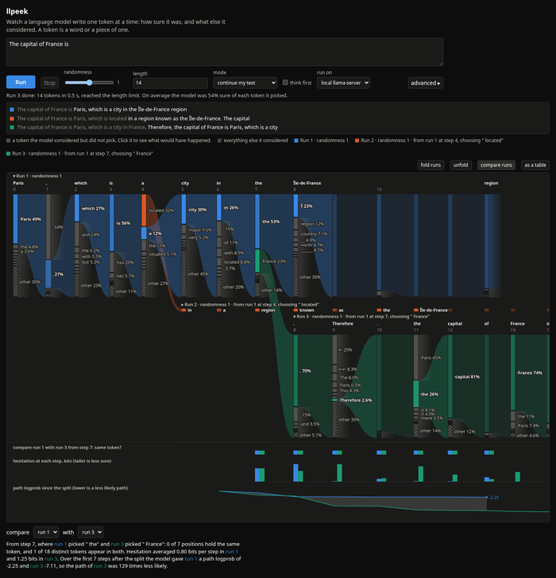

llpeek
Large Language Peek. Companion to llav, which turns the same probabilities into verdicts.
Watch a language model write one token at a time: how sure it was and what else it considered. Pick a different candidate and see where it leads.
Try it in your browser Source on GitHubThe browser version downloads a 2 GB model once and runs it on your machine with WebAssembly. Nothing you type leaves your computer.

Three runs of "The capital of France is". At step 4 the model picked " a" but had put more weight on " located"; clicking that gray node started the orange run. The green run branches at step 7 on " France", and the tracks below line it up with the first run: which tokens match, how much the model hesitated, and how far the path probability drifts.
How to read it
A language model does not write words. At every step it scores every token in its vocabulary, a token being a word or a piece of one, and a sampler picks one. llpeek draws that step as a column.
- The colored node is the token that was picked. Its height is the chance the model gave it.
- Gray nodes are tokens it considered but did not pick, tallest first. Click one to branch: a new run continues from that alternative, in its own color.
- The hatched node is everything else it considered, all the small chances added together.
- The ribbon carries the picked token into the next column: the next step's choices depend on it. Fading stubs are alternatives that lead nowhere, because they were never followed.
- Column width is hesitation. Where the model was sure, the column is only as wide as its token and the trace reads like text. Where it deliberated, the column opens up.
- Faded columns are confident whitespace and punctuation: formatting, not decisions.
The line above each run is the output, aligned with its columns, so you can read what was written and see where it was decided. Hover anything for the numbers. Raise the length after a run to keep it going. "Advanced" reveals the sampler settings, a seed for reproducible runs, a side-by-side comparison of settings, and a view of what the sampler was allowed to pick from after its filters.
Try it
Open the app, press "load model" and wait for the download (2 GB, cached afterwards). Then type a prompt and press Run. A 1 MB toy model is in the list if you only want to see the tooling move.
The in-browser engine is wllama, llama.cpp compiled to WebAssembly. Expect around 10 tokens per second on a laptop. Chrome and Firefox work; the page installs a small service worker so the model can use several threads.
Run it locally
With a local llama.cpp server the same page runs several times faster and works with any GGUF you have. You need llama-server on your path and Deno.
git clone https://github.com/wistrand/llpeek cd llpeek deno task model qwen3.5-2b # download the 2B model into ~/models, once deno task dev # llama-server on :8089 and the app on http://localhost:8000
deno task model with no arguments lists the known models. The app talks to llama-server's /completion endpoint with n_probs, which returns the top candidates for every generated token; branches continue from the exact token sequence. The locally served page offers both engines and looks for the server when it opens; this published page runs in the browser only.